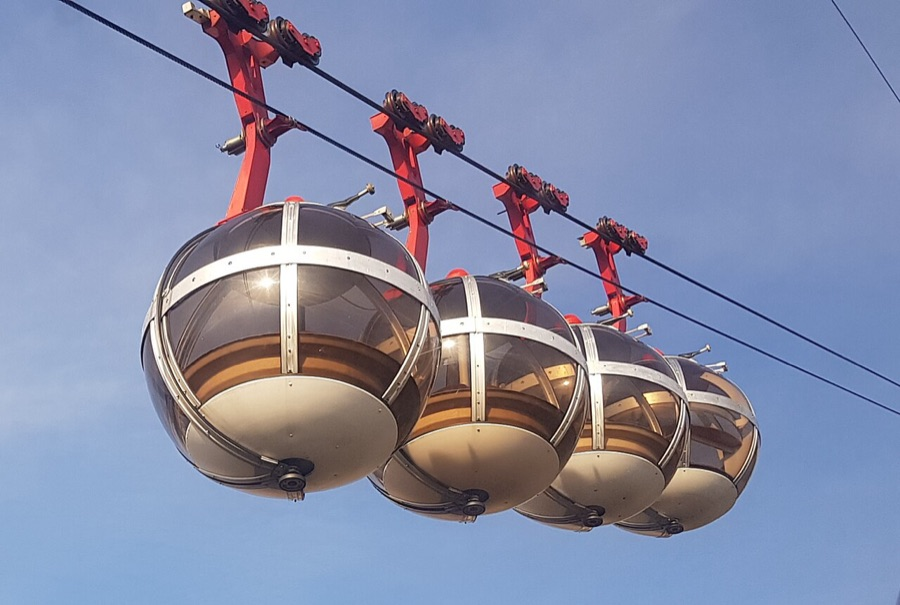

grnbl : la bulle de la Bastille
L'idée B du 8e tour, redessinée d'après les vraies cabines et réduite à quelques formes : la sphère, la bande au-dessus du milieu, les méridiens, la coupelle du bas, le bras coudé et les deux câbles. Mêmes proportions que la photo, sept façons de la simplifier.

Donne-moi le numéro.